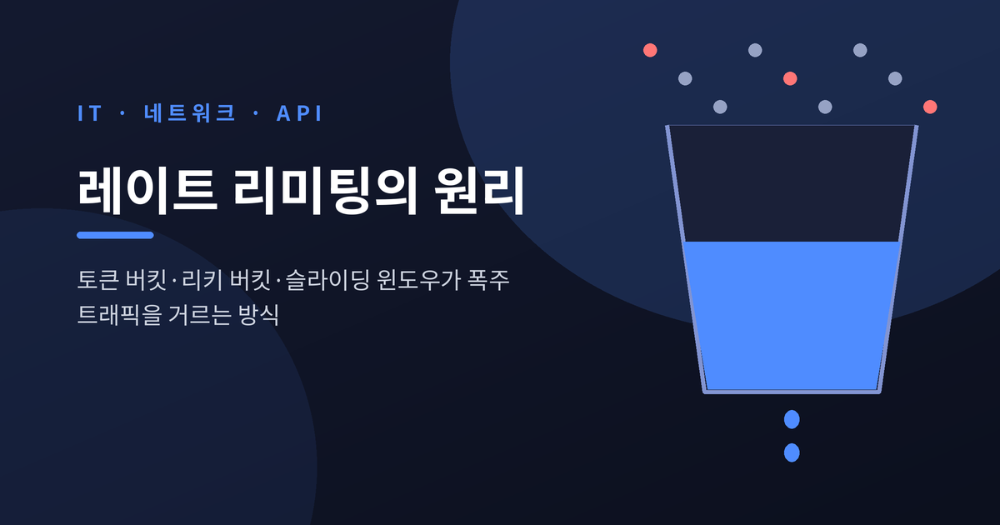
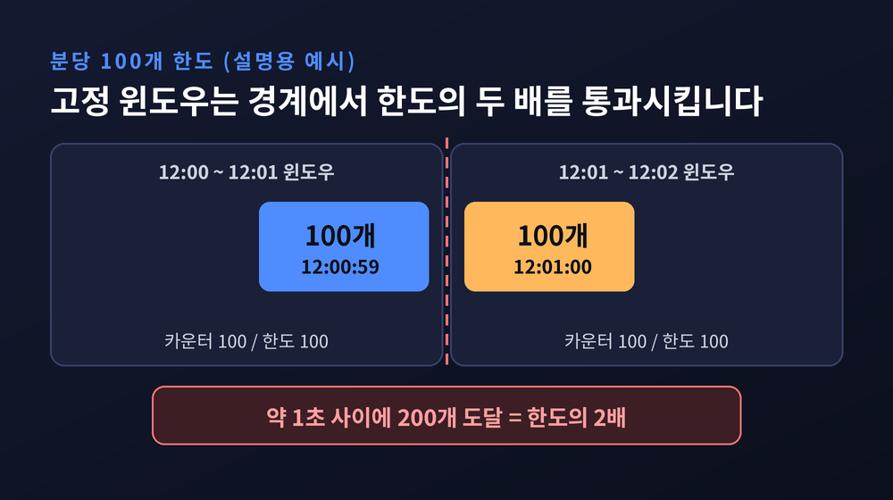
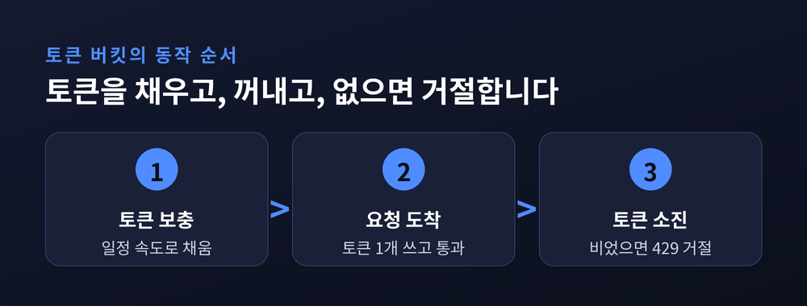
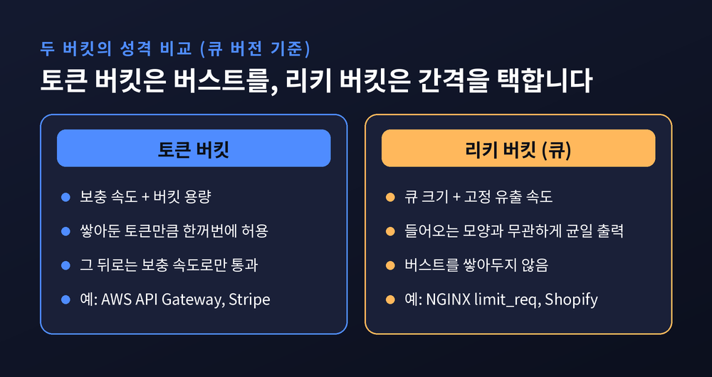
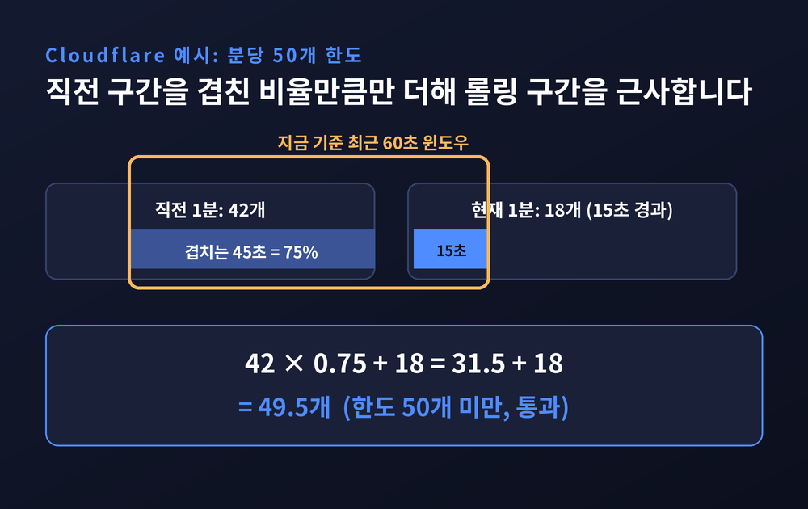
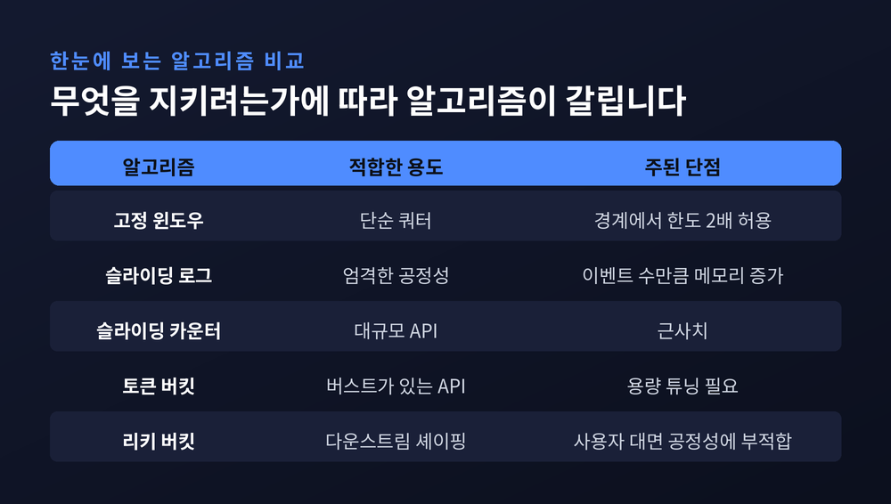
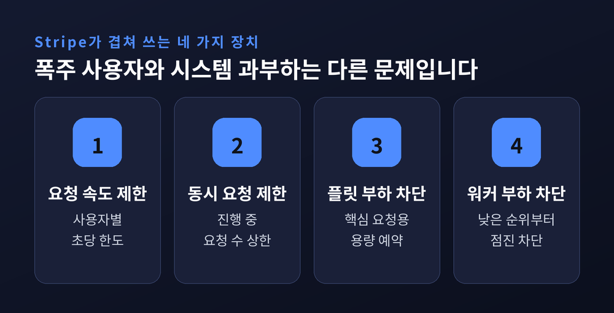

레이트 리미팅 원리 — 토큰 버킷과 슬라이딩 윈도우가 폭주를 막는 방식

이번 글에서는 레이트 리미팅(Rate Limiting)의 원리를 정리해 보겠습니다. 한 사용자나 한 서비스가 보내는 요청의 양을 일정 기준으로 묶어두는 장치입니다. 고정 윈도우의 허점에서 출발해 토큰 버킷, 리키 버킷, 슬라이딩 윈도우가 각각 요청을 어떻게 세는지, 그리고 Stripe 같은 서비스가 이를 어떻게 겹쳐 쓰는지 차례로 살펴보겠습니다.
세 줄 요약
- 가장 단순한 고정 윈도우는 구간 경계에서 한도의 두 배까지 통과시킵니다. 이 허점을 메우려고 다른 알고리즘들이 나왔습니다.
- 토큰 버킷은 버스트를 허용하고, 리키 버킷은 출력을 일정하게 펴며, 슬라이딩 윈도우 카운터는 숫자 두 개로 롤링 구간을 근사합니다.
- 실제 서비스는 알고리즘 하나로 끝내지 않습니다. 속도 제한, 동시 요청 제한, 부하 차단을 층층이 겹칩니다.
요청을 세는 가장 쉬운 방법에는 허점이 있습니다
레이트 리미팅은 "일정 시간에 몇 번까지"를 정하고 넘는 요청을 거절하는 일입니다.
거절할 때는 HTTP 429(Too Many Requests)를 쓰는 것이 표준입니다. 2012년 4월 RFC 6585가 정의했고, 서버는 Retry-After 헤더로 언제 다시 시도하면 되는지 알려줄 수 있습니다.
GitHub의 REST API가 좋은 예입니다. 인증하지 않은 요청은 시간당 60회, 인증한 사용자는 시간당 5,000회까지 허용합니다. 여기에 동시 요청 100개 같은 보조 한도가 따로 붙습니다.
이 한도를 구현하는 가장 쉬운 방식이 고정 윈도우 카운터입니다.
시간을 60초 같은 칸으로 나누고, 칸마다 카운터를 두고, 칸이 바뀌면 0으로 되돌립니다. 정수 하나와 윈도우 식별자만 있으면 되니 메모리도 거의 들지 않습니다.
문제는 칸의 경계입니다.
12시 00분 59초에 100개, 12시 01분 00초에 100개를 보낸다고 해 보겠습니다. 분당 100개라는 규칙은 지켰습니다. 그러나 왕복 시간 안에 200개가 서버에 닿습니다. Arcjet은 이를 "2배 경계 스파이크"라 부르며, 윈도우 길이와 상관없이 생긴다고 설명합니다.

토큰 버킷은 모아둔 여유분만큼 버스트를 허락합니다
토큰 버킷은 발상을 뒤집습니다. 요청을 세는 대신 "쓸 수 있는 권리"를 모읍니다.
원리는 이렇습니다. 버킷에 일정 속도로 토큰이 채워지고, 용량은 b개까지입니다. 요청이 오면 토큰을 하나 꺼내 통과시킵니다. 토큰이 없으면 거절합니다. 가득 찬 버킷에는 더 채우지 않습니다.
파라미터는 두 개입니다. 보충 속도는 장기 평균을 정하고, 버킷 용량은 순간 버스트의 크기를 정합니다. 한동안 조용했던 사용자는 토큰이 가득 쌓여 있으니 한꺼번에 여러 개를 보내도 됩니다. 대신 그 뒤로는 보충 속도로만 흘러갑니다.
AWS API Gateway가 이 구조를 그대로 노출합니다. rate는 토큰이 채워지는 초당 속도, burst는 버킷의 용량입니다. 기본 계정 쿼터는 리전당 초당 10,000건에 버스트 5,000건입니다. 한도를 넘으면 429가 돌아옵니다.
Stripe도 같은 방식입니다. 2017년 블로그 글에서 "모든 사용자는 버킷을 가지고, 요청할 때마다 토큰을 하나 뺀다"고 적었고, 상태는 Redis에 둡니다.
아쉬운 점도 있습니다. 버킷 용량과 보충 속도를 알맞게 맞추기가 까다롭습니다. 또 Figma는 토큰 버킷이 "읽고 나서 쓰는" 연산이라, 분산 환경에서 동시 요청이 경쟁 상태를 만들어 한도를 우회할 수 있다고 지적했습니다. 락이나 Lua 스크립트가 필요한 이유입니다.

리키 버킷은 들어오는 속도와 상관없이 일정하게 내보냅니다
리키 버킷은 이름 그대로 구멍 난 양동이입니다.
큐 버전에서는 요청이 FIFO 큐에 들어가고, 큐는 고정된 속도로 요청을 흘려보냅니다. 큐가 가득 차면 새 요청은 거절됩니다. 들어오는 쪽이 아무리 출렁여도 나가는 쪽은 일정합니다. 그래서 다운스트림 서버를 보호하는 트래픽 셰이핑에 어울립니다.
NGINX의 limit_req가 대표적입니다. rate=10r/s는 100밀리초에 요청 하나라는 뜻이고, burst=20이면 초과분을 최대 20개까지 큐에 세웁니다. 그보다 많으면 기본값으로 503을 돌려줍니다. nodelay를 붙이면 큐에 자리가 있는 한 간격을 두지 않고 곧장 전달합니다.
토큰 버킷과 무엇이 다를까요. 큐 버전은 버스트를 쌓아두지 않습니다. 토큰 버킷이 "여유분을 한꺼번에 써도 된다"고 말한다면, 리키 버킷은 "언제 오든 같은 간격으로 받는다"고 말합니다.
한 가지 덧붙이겠습니다. Wikipedia에 따르면 리키 버킷을 "미터"로 구현한 형태는 토큰 버킷의 거울상입니다. 한쪽은 채우고 한쪽은 비우는 차이일 뿐, 파라미터를 맞추면 같은 요청을 통과시키고 같은 요청을 거절합니다. 이름은 둘이지만 뿌리가 같은 셈입니다.
ByteByteGo는 리키 버킷의 약점도 짚습니다. 트래픽이 몰리면 오래된 요청이 큐를 채워 최신 요청이 밀려난다는 것입니다.

슬라이딩 윈도우는 칸의 경계를 없앱니다
고정 윈도우의 허점을 정면으로 메우는 방식이 슬라이딩 윈도우입니다. 두 갈래가 있습니다.
첫째는 로그 방식입니다. 요청마다 타임스탬프를 저장하고, 새 요청이 올 때 윈도우보다 오래된 기록을 지운 뒤 남은 개수를 셉니다. 어느 롤링 구간에서도 한도를 넘지 않으니 가장 정확합니다.
대가는 메모리입니다. 60초에 요청 10,000개를 보내는 사용자 한 명이 타임스탬프 10,000개를 차지합니다. Arcjet은 카운터 방식보다 두세 자릿수 비효율적이라고 평가합니다. Figma의 가정으로는 하루 500회씩 요청하는 사용자 1만 명에 약 20MB가 듭니다.
둘째는 카운터 방식입니다. 현재 구간의 카운트와 직전 구간의 카운트만 들고, 직전 구간을 겹친 비율만큼 반영합니다.
추정치 = 현재 구간 카운트 + 이전 구간 카운트 × (1 − 경과 시간 / 윈도우)
Cloudflare의 예시가 알기 쉽습니다. 분당 50개 한도에서 직전 분에 42개, 현재 분 15초 시점에 18개라면 42 × 0.75 + 18 = 49.5개로 계산합니다. 저장하는 값은 숫자 두 개뿐입니다.
정확도는 어느 정도일까요. Cloudflare는 27만 개 출처의 4억 건 요청을 분석했고, 잘못 허용되거나 차단된 요청은 0.003%였습니다. 실제 속도와 근사 속도의 평균 차이는 6%였습니다. 한도를 넘었는데 통과한 출처는 3개였고 초과폭도 15% 미만이었습니다. 한도 아래인데 차단된 출처는 없었습니다.
Figma는 같은 원리로 시간당 한도를 분 단위 카운터 60개로 쪼개 같은 시나리오의 메모리를 약 2.4MB로 줄였습니다. 약 90% 감소입니다.
한계도 분명합니다. 직전 구간의 요청이 고르게 퍼져 있었다고 가정하는 근사치입니다. 엄밀한 공정성이 필요하다면 로그 방식을 택해야 합니다.

어떤 알고리즘을 고를까요
예전에는 "어떤 알고리즘이 가장 좋은가"를 물었다면, 지금은 "무엇을 보호하려는가"를 먼저 묻는 편이 낫습니다.
Arcjet의 정리를 빌리면 이렇습니다.

Cloudflare가 리키 버킷 대신 슬라이딩 윈도우를 고른 이유가 선택 기준을 잘 보여줍니다. 리키 버킷은 평균 속도와 버스트라는 두 파라미터를 맞추기 어렵고, memcached의 제약 안에서 원자적으로 실행하기도 어려웠습니다. 슬라이딩 윈도우는 카운터당 숫자 두 개와 원자적 증가 연산으로 해결됩니다.
사용자에게 버스트를 허락하고 싶은 API라면 토큰 버킷. 뒤쪽 서버로 흘러가는 속도를 고르게 펴야 한다면 리키 버킷. 수억 건을 싸게 세야 하는 대규모 서비스라면 슬라이딩 윈도우 카운터. 이런 식으로 목적이 알고리즘을 고릅니다.
알고리즘 하나로는 끝나지 않습니다
Stripe는 2017년 글에서 네 겹의 장치를 소개했습니다.

요청 속도 제한기는 사용자별로 초당 요청 수를 묶습니다. 그 달에만 수백만 건을 거절했다고 합니다. 동시 요청 제한기는 진행 중인 요청 수의 상한을 두며, CPU를 많이 쓰는 엔드포인트에서 월 12,000건을 거절했습니다.
나머지 둘은 부하 차단(load shedding)입니다. 요청한 사용자가 아니라 시스템 전체 상태를 보고 결정합니다. 플릿 사용량 차단기는 인프라 일부를 핵심 요청용으로 남겨두고, 비핵심 요청이 할당치를 넘으면 거절합니다. 워커 사용률 차단기는 사고 때의 마지막 방어선입니다. 핵심 메서드, POST, GET, 테스트 모드 순으로 우선순위를 나누고 낮은 쪽부터 점진적으로 차단합니다.
사용자 한 명의 폭주와 시스템 전체의 과부하는 다른 문제입니다. 앞의 것은 알고리즘이, 뒤의 것은 우선순위가 맡습니다.
정리하면 이렇습니다.
레이트 리미팅은 요청을 막는 기술이기 전에 "얼마만큼의 여유를, 어떤 모양으로 허락할 것인가"를 정하는 설계입니다.
토큰 버킷은 모아둔 여유를, 리키 버킷은 일정한 간격을, 슬라이딩 윈도우는 경계 없는 공정함을 택한 결과입니다. 오늘 서비스에 한도를 걸어야 한다면, 가장 먼저 지키고 싶은 것이 무엇인지부터 적어 보시길 권합니다.